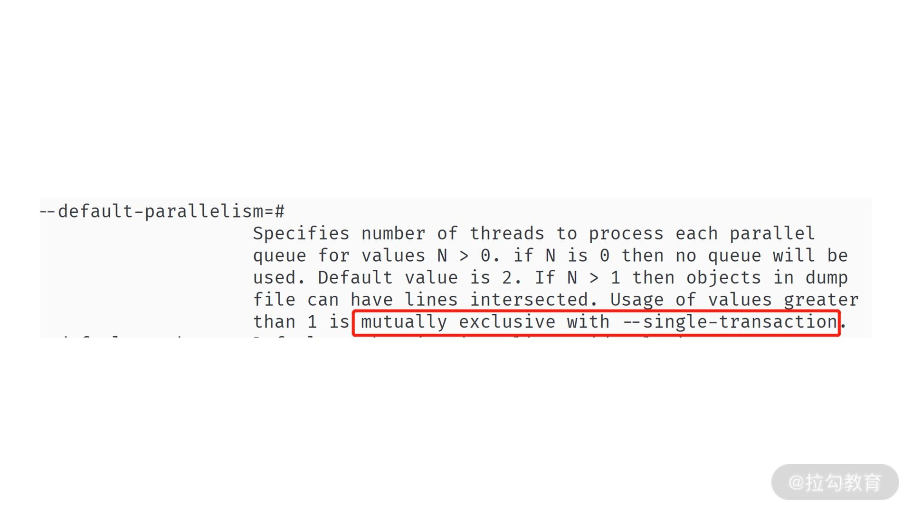

- 00 开篇词 从业务出发，开启海量 MySQL 架构设计.md.html
- 01 数字类型：避免自增踩坑.md.html
- 02 字符串类型：不能忽略的 COLLATION.md.html
- 03 日期类型：TIMESTAMP 可能是巨坑.md.html
- 04 非结构存储：用好 JSON 这张牌.md.html
- 05 表结构设计：忘记范式准则.md.html
- 06 表压缩：不仅仅是空间压缩.md.html
- 07 表的访问设计：你该选择 SQL 还是 NoSQL？.md.html
- 08 索引：排序的艺术.md.html
- 09 索引组织表：万物皆索引.md.html
- 10 组合索引：用好，性能提升 10 倍！.md.html
- 11 索引出错：请理解 CBO 的工作原理.md.html
- 12 JOIN 连接：到底能不能写 JOIN？.md.html
- 13 子查询：放心地使用子查询功能吧！.md.html
- 14 分区表：哪些场景我不建议用分区表？.md.html
- 15 MySQL 复制：最简单也最容易配置出错.md.html
- 16 读写分离设计：复制延迟？其实是你用错了.md.html
- 17 高可用设计：你怎么活用三大架构方案？.md.html
- 18 金融级高可用架构：必不可少的数据核对.md.html
- 19 高可用套件：选择这么多，你该如何选？.md.html
- 20 InnoDB Cluster：改变历史的新产品.md.html
- 21 数据库备份：备份文件也要检查！.md.html
- 22 分布式数据库架构：彻底理解什么叫分布式数据库.md.html
- 23 分布式数据库表结构设计：如何正确地将数据分片？.md.html
- 24 分布式数据库索引设计：二级索引、全局索引的最佳设计实践.md.html
- 25 分布式数据库架构选型：分库分表 or 中间件 ？.md.html
- 26 分布式设计之禅：全链路的条带化设计.md.html
- 27 分布式事务：我们到底要不要使用 2PC？.md.html
21 数据库备份：备份文件也要检查！
在前几讲中，我们学习了高可用的架构设计。你要牢记：高可用只是用来保证业务的连续性，当发生灾难时，MySQL 数据库可以进行切换（比如 20 讲基于复制或者 InnoDB Cluster 技术的高可用解决方案）。
除了高可用设计外，对架构师来说，还要做好备份架构的设计。因为我们要防范意外情况的发生，比如黑客删除了数据库中所有的核心数据；又或者某个员工有意也罢、无意也好，删除了线上的数据。
这种删库跑路的情况并不少见，几乎每过一段时间就成为头条新闻，比如 2020 年发生的微盟删库事件：
2 月 23 日晚上，微盟核心员工贺某私自删除数据库，直接导致公司 SaaS 业务突然崩溃，基于微盟的商家小程序都处于宕机状态，300 万家商户生意基本停摆，生意快做不下去了。同时，微盟自身也蒙受巨大损失，短短几天公司市值就蒸发超过 20 亿港元。
我们可以看到，破坏性的删除数据不但会对业务连续性产生影响，也会让公司经济遭受不可评估的破坏。所以这一讲，我们就来学习 “如何设计一个完整的备份系统”。
数据库备份
复制技术（Replication）或 InnoDB Cluster 只负责业务的可用性，保障数据安全除了线上的副本数据库，我们还要构建一个完整的离线备份体系。这样即使线上数据库被全部破坏，用户也可以从离线备份恢复出数据。
所以，第一步要做好：线上数据库与离线备份系统的权限隔离。
也就是说，可以访问线上数据库权限的同学一定不能访问离线备份系统，反之亦然。否则，如果两边的数据都遭受破坏，依然无法恢复数据。
而对于 MySQL 数据库来说，数据库备份分为全量备份、增量备份。
全量备份
指备份当前时间点数据库中的所有数据，根据备份内容的不同，全量备份可以分为逻辑备份、物理备份两种方式。
- 逻辑备份
指备份数据库的逻辑内容，就是每张表中的内容通过 INSERT 语句的形式进行备份。
MySQL 官方提供的逻辑备份工具有 mysqldump 和 mysqlpump。通过 mysqldump 进行备份，可以使用以下 SQL 语句：
mysqldump -A --single-transaction > backup.sql
上面的命令就是通过 mysqldump 进行全量的逻辑备份：
- 参数 -A 表示备份所有数据库；
- 参数 --single-transaction 表示进行一致性的备份。
我特别强调，参数 --single-transaction 是必须加的参数，否则备份文件的内容不一致，这样的备份几乎没有意义。
如果你总忘记参数 --single-transaction，可以在 MySQL 的配置文件中加上如下提示：
# my.cnf
[mysqldump]
single-transaction
按上面配置，每当在服务器上运行命令时 mysqldump 就会自动加上参数 --single-transaction，你也就不会再忘记了。
在上面的命令中，最终的备份文件名为 backup.sql，打开这个文件，我们会看到类似的内容：
-- MySQL dump 10.13 Distrib 8.0.23, for Linux (x86_64)
--
-- Host: localhost Database:
-- ------------------------------------------------------
-- Server version 8.0.23
/*!40101 SET @[email protected]@CHARACTER_SET_CLIENT */;
/*!40101 SET @[email protected]@CHARACTER_SET_RESULTS */;
/*!40101 SET @[email protected]@COLLATION_CONNECTION */;
/*!50503 SET NAMES utf8mb4 */;
/*!40103 SET @[email protected]@TIME_ZONE */;
/*!40103 SET TIME_ZONE='+00:00' */;
/*!50606 SET @[email protected]@INNODB_STATS_AUTO_RECALC */;
/*!50606 SET GLOBAL INNODB_STATS_AUTO_RECALC=OFF */;
/*!40014 SET @[email protected]@UNIQUE_CHECKS, UNIQUE_CHECKS=0 */;
/*!40014 SET @[email protected]@FOREIGN_KEY_CHECKS, FOREIGN_KEY_CHECKS=0 */;
/*!40101 SET @[email protected]@SQL_MODE, SQL_MODE='NO_AUTO_VALUE_ON_ZERO' */;
/*!40111 SET @[email protected]@SQL_NOTES, SQL_NOTES=0 */;
--
-- Current Database: `mysql`
--
CREATE DATABASE /*!32312 IF NOT EXISTS*/ `mysql` /*!40100 DEFAULT CHARACTER SET utf8mb4 COLLATE utf8mb4_0900_ai_ci */ /*!80016 DEFAULT ENCRYPTION='N' */;
USE `mysql`;
...
可以看到，文件 backup.sql 本质就是一个文本文件，里面记录的就是一条条 SQL 语句，而这就是我们说的逻辑备份。要恢复逻辑备份非常简单，就是执行文件中的 SQL 语句，这时可以使用下面的 SQL：
mysql < backup.sql
虽然 mysqldump 简单易用，但因为它备份是单线程进行的，所以速度会比较慢，于是 MySQL 推出了 mysqlpump 工具。
命令 mysqlpump 的使用几乎与 mysqldump 一模一样，唯一不同的是它可以设置备份的线程数，如：
mysqlpump -A --single-transaction --default-parallelism=8 > backup.sql
Dump progress: 1/1 tables, 0/0 rows
Dump progress: 25/37 tables, 881632/42965650 rows
Dump progress: 25/37 tables, 1683132/42965650 rows
......
上面的命令显示了通过 mysqlpump 进行备份。参数 --default-parallelism 表示设置备份的并行线程数。此外，与 mysqldump 不同的是，mysqlpump 在备份过程中可以查看备份的进度。
不过在真正的线上生产环境中，我并不推荐你使用 mysqlpump， 因为当备份并发线程数超过 1 时，它不能构建一个一致性的备份。见 mysqlpump 的提示：
 另外，mysqlpump 的备份多线程是基于多个表的并行备份，如果数据库中存在一个超级大表，那么对于这个表的备份依然还是单线程的。那么有没有一种基于记录级别的并行备份，且支持一致性的逻辑备份工具呢？
有的，那就是开源的 mydumper 工具，地址：https://github.com/maxbube/mydumper。mydumper 的强大之处在于：
- 支持一致性的备份；
- 可以根据表中的记录进行分片，从而进行多线程的备份；
- 对于恢复操作，也可以是多线程的备份；
- 可以指定单个表进行多线程的恢复。
我们可以看到，mydumper 几乎是一个完美的逻辑备份工具，是构建备份系统的首选工具。我提供给你一个简单的 mydumper 的使用方法：
mydumper -o /bak -r 100000 --trx-consistency-only -t 8
上面的命令表示，将备份文件保存到目录 /bak 下，其中：
- 参数 -r 表示每张表导出 100000 条记录后保存到一张表；
- 参数 --trx-consistency-only 表示一致性备份；
- 参数 -t 表示 8 个线程并行备份。
可以看到，即便对于一张大表，也可以以 8 个线程，按照每次 10000 条记录的方式进行备份，这样大大提升了备份的性能。
- 物理备份
当然，逻辑备份虽然好，但是它所需要的时间比较长，因为本质上逻辑备份就是进行 INSERT ... SELECT ... 的操作。
而物理备份直接备份数据库的物理表空间文件和重做日志，不用通过逻辑的 SELECT 取出数据。所以物理备份的速度，通常是比逻辑备份快的，恢复速度也比较快。
但它不如 mydumper 的是，物理备份只能恢复整个实例的数据，而不能按指定表进行恢复。MySQL 8.0 的物理备份工具可以选择官方的 Clone Plugin。
Clone Plugin 是 MySQL 8.0.17 版本推出的物理备份工具插件，在安装完插件后，就可以对MySQL 进行物理备份了。而我们要使用 Clone Plugin 就要先安装 Clone Plugin 插件，推荐在配置文件中进行如下设置：
[mysqld]
plugin-load-add=mysql_clone.so
clone=FORCE_PLUS_PERMANENT
这时进行物理备份可以通过如下命令：
mysql> CLONE LOCAL DATA DIRECTORY = '/path/to/clone_dir';
可以看到，在 mysql 命令行下输入 clone 命令，就可以进行本地实例的 MySQL 物理备份了。
Clone Plugin 插件强大之处还在于其可以进行远程的物理备份，命令如下所示：
CLONE INSTANCE FROM 'user'@'host':port
IDENTIFIED BY 'password'
[DATA DIRECTORY [=] 'clone_dir']
[REQUIRE [NO] SSL];
从上面的命令我们可以看到，Clone Plugin 支持指定的用户名密码，备份远程的物理备份到当前服务器上，根据 Clone Plugin 可以非常容易地构建备份系统。
对于 MySQL 8.0 之前的版本，我们可以使用第三方开源工具 Xtrabackup，官方网址：https://github.com/percona/percona-xtrabackup。
不过，物理备份实现机制较逻辑备份复制很多，需要深入了解 MySQL 数据库内核的实现，我强烈建议使用 MySQL 官方的物理备份工具，开源第三方物理备份工具只作为一些场景的辅助手段。
增量备份
前面我们学习的逻辑备份、物理备份都是全量备份，也就是对整个数据库进行备份。然而，数据库中的数据不断变化，我们不可能每时每分对数据库进行增量的备份。
所以，我们需要通过“全量备份 + 增量备份”的方式，构建完整的备份策略。增量备份就是对日志文件进行备份，在 MySQL 数据库中就是二进制日志文件。
因为二进制日志保存了对数据库所有变更的修改，所以“全量备份 + 增量备份”，就可以实现基于时间点的恢复（point in time recovery），也就是“通过全量 + 增量备份”可以恢复到任意时间点。
全量备份时会记录这个备份对应的时间点位，一般是某个 GTID 位置，增量备份可以在这个点位后重放日志，这样就能实现基于时间点的恢复。
如果二进制日志存在一些删库的操作，可以跳过这些点，然后接着重放后续二进制日志，这样就能对极端删库场景进行灾难恢复了。
想要准实时地增量备份 MySQL 的二进制日志，我们可以使用下面的命令：
mysqlbinlog --read-from-remote-server --host=host_name --raw --stop-never binlog.000001
可以看到，增量备份就是使用之前了解的 mysqlbinlog，但这次额外加上了参数 --read-from-remote-server，表示可以从远程某个 MySQL 上拉取二进制日志，这个远程 MySQL 就是由参数 --host 指定。
参数 --raw 表示根据二进制的方式进行拉取，参数 --stop-never 表示永远不要停止，即一直拉取一直保存，参数 binlog.000001 表示从这个文件开始拉取。
MySQL 增量备份的本质是通过 mysqlbinlog 模拟一个 slave 从服务器，然后主服务器不断将二进制日志推送给从服务器，利用之前介绍的复制技术，实现数据库的增量备份。
增量备份的恢复，就是通过 mysqlbinlog 解析二进制日志，然后进行恢复，如：
mysqlbinlog binlog.000001 binlog.000002 | mysql -u root -p
备份策略
在掌握全量备份、增量备份的知识点后，我们就能构建自己的备份策略了。
首先，我们要设置全量备份的频率，因为全量备份比较大，所以建议设置 1 周 1 次全量备份，实时增量备份的频率。这样最坏的情况就是要恢复 7 天前的一个全备，然后通过 7 天的增量备份恢复。
对于备份文件，也需要进行备份。我们不能认为备份文件的存储介质不会损坏。所以，至少在 2 个机房的不同存储服务器上存储备份文件，即备份文件至少需要 2 个副本。至于备份文件的保存期限，取决于每个公司自己的要求（比如有的公司要求永久保存，有的公司要求保留至少近 3 个月的备份文件）。
所有的这些备份策略，都需要自己的备份系统进行调度，这个并没有什么特别好的开源项目，需要根据自己的业务需求，定制开发。
备份文件的检查
在我的眼中，备份系统非常关键，并不亚于线上的高可用系统。
在 18 讲中，我们讲到线上主从复制的高可用架构，还需要进行主从之间的数据核对，用来确保数据是真实一致的。
同样，对于备份文件，也需要进行校验，才能确保备份文件的正确的，当真的发生灾难时，可通过备份文件进行恢复。因此，备份系统还需要一个备份文件的校验功能。
备份文件校验的大致逻辑是恢复全部文件，接着通过增量备份进行恢复，然后将恢复的 MySQL实例连上线上的 MySQL 服务器作为从服务器，然后再次进行数据核对。
牢记，只有当核对是 OK 的，才能证明你的备份文件是安全的。所以备份文件同样要检查。
总结
今天我们学习了构建 MySQL 的备份策略，首先讲了 MySQL 数据库的全量备份逻辑备份、物理备份。接着学习了通过 mysqlbinlog 进行增量备份。通过全量备份和增量备份就能构建一个完整的备份策略。最后明确了要对备份文件进行检查，以此确保备份文件的安全性。
希望在学完这一讲后，你能将所学内容应用到你的生产环境，构建一个稳定、可靠，即便发生删库跑路的灾难事件，也能对数据进行恢复的备份系统。